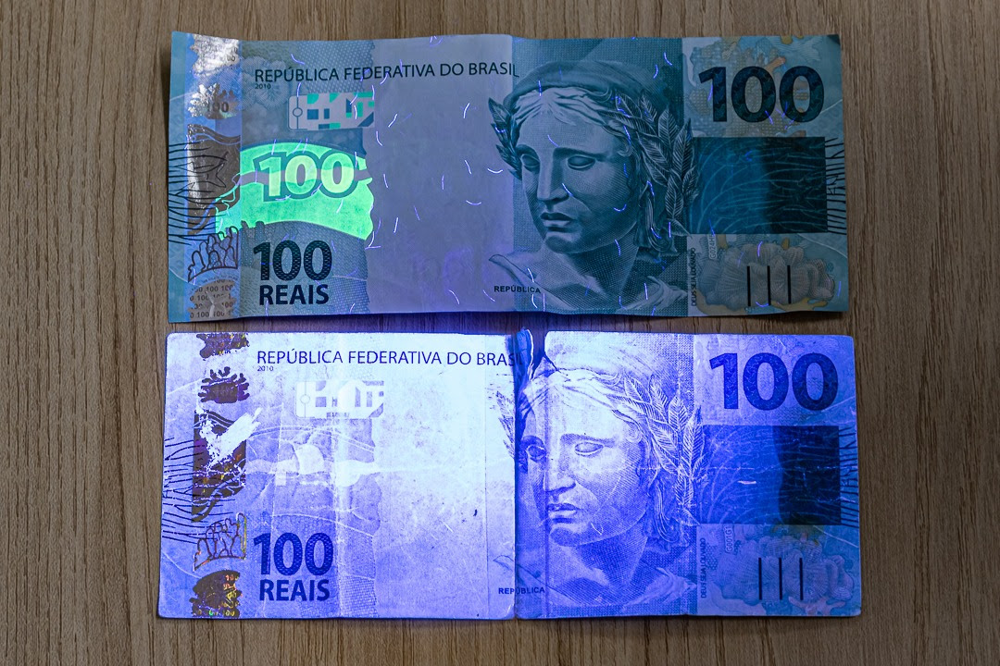
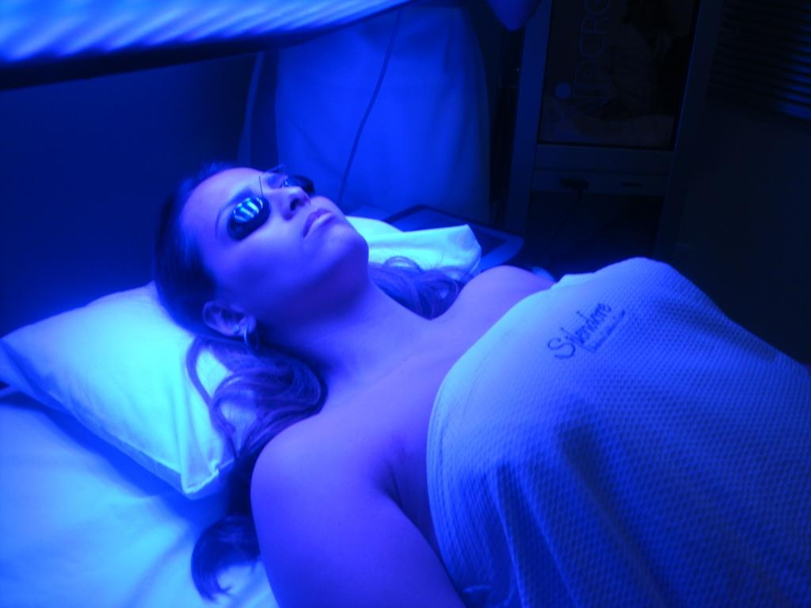
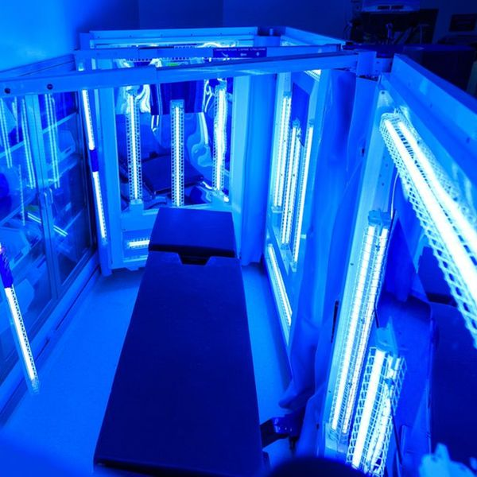

-Tratamentos dermatológicos: UVA é usado para tratar condições de pele, como psoríase e vitiligo.
-Bronzeamento artificial: UVA é usado em clínicas de bronzeamento para estimular a produção de melanina.
-Terapia fotodinâmica: UVA é usado para tratar certos tipos de câncer de pele.
-Cura de tintas e adesivos: UVA é usado para acelerar a cura de tintas e adesivos.
-Detecção de falsificações: UVA é usado para detectar falsificações de documentos e produtos.

-Produção de vitamina D: UVB é essencial para a produção de vitamina D na pele, importante para a saúde óssea.
-Tratamento de psoríase: UVB é usado para tratar psoríase, especialmente em casos leves a moderados.
-Terapia de luz: UVB é usado para tratar depressão sazonal e outras condições relacionadas à falta de luz solar.
-Iluminação: UVB é usado em lâmpadas especiais para iluminação de plantas e animais.

-Esterilização: UVC é usado para esterilizar superfícies, equipamentos e ambientes em hospitais e clínicas.
-Desinfecção de água: UVC é usado para desinfetar água e eliminar bactérias, vírus e outros microorganismos.
-Tratamento de infecções: UVC é usado para tratar infecções de pele e mucosas.
Indústria de alimentos: UVC é usado para esterilizar superfícies e equipamentos em indústrias de alimentos.
-Laboratórios: UVC é usado para esterilizar equipamentos e materiais de laboratório.